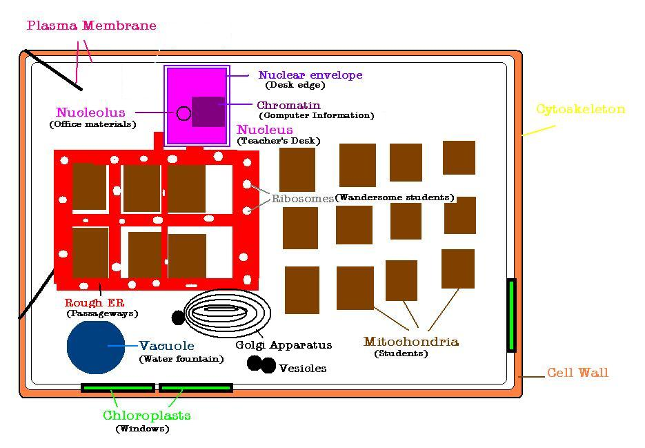
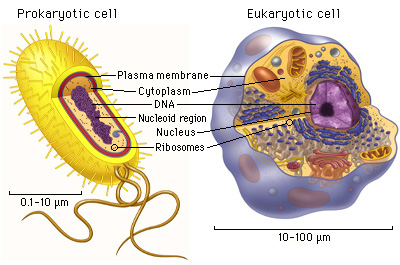
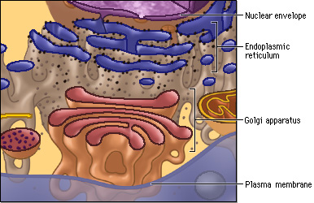

Here is a picture showing how a plant cell relates to our classroom.  The framework of our classroom is much like the cytoskeleton in the way that it holds the shape of the cell together. The microtubules and microfilaments are flexible (like wood) and cushion the building in cases such as an earthquake. The cell wall is like the walls of our classroom because it protects the inside of the classroom from outside noise and weather. The plasma membrane resembles a door to the classroom because it lets certain things in or out. The walls are also like a membrane because they're made up of lipids and lipids provide insulation. The teacher and her desk are like the nucleus because they are the control center for everything that goes on in the classroom. Mrs. Groch controls the activities of the students. The computer is the storage of information (Chromosomes and Chromatin). Office materials on the desk could be seen as the nucleoli because they build and assemble. (They glue, staple, and write, but they don't white out, erase or hole-punch.) The rough endoplasmic reticulum is the passageway in which ribsosomes are transported to the Golgi apparatus. Ribosomes being composed of sugar would symbolize the energetic students of the classroom who can't keep their mouths shut or sit-still. (::Cough:: Avi!) The students may be seen as the mitochondria in the cell because they provide the energy and power to the class. The chloroplasts in a cell are when light is used as energy. The windows in the room let in light so that we can see and perform our daily tasks, much like the chloroplasts provide the energy for tasks. The non-existant water fountain in our class is where we keep the "stuff" we need to keep going or the gas to keep running. In cells, vacuoles are places of storage for water or other materials. Definitions: -organelle: an organized structure within a cell with a specific function ("little organs"). -prokaryote: an organism whose cells do not have membrane-enclosed nuclei or organelles; a moneran (bacterium). -eukaryote: an organism whose cells have a membrane enclosed nucleus and organelles; a protist, a fungus, a plant, or an animal. More complex then prokaryote. Have a fully formed nucleus. -cytoskeleton: cover cell wall, provides shape, internal organization, and movement(holds the organelles in place) -cell wall: composed of cellulose fibers embedded in a matrix of protein and polysaccharides (carbohydrates). It supports and protects the cell. A cell wall is only present in plant cells. Most consistent difference between plant and animal cells. plasma membrane: the membrane at the boundary of every cell, (prokaryotic and eukaryotic) which serves as a selective barrier to the passage of ions and molecules. (Selectively means it controls the passage of materials into and out of the cell.) Two lipid layers surface embedded with proteins with attached carbohydrates. -nucleus: control center of the cell that contains most of the cells genetic information and DNA. In eukaryotic cells, the membrane-bound organelle that houses the chromosomes. Nuclei contain one or more nucleoli, sites of synthesis, and assembly of RNA. -nuclear envelope: double layer of membranes around the nucleus. -nucleolus: a structure in the nucleus that synthesizes ribosomal RNA. In the nucleus, bodies of concentrated RNA are called nucleoli (the plural) . -chromatin: in eukaryotes, the chromosomal material (DNA and associated proteins) as it ordinarily apperas in a cell's nucleus, with individual chromosomes indistinct. ribosomes: organelles consisting of two subunits and functioning as the site of protein synthesis. Nucleic acids that contain ribose in their nucleotides are called ribonucleic acids or RNA. Ribose is a five carbon sugar (a pentose). -endoplasmic reticulum (ER): a system of membranes that form channels throughout the cytoplasm; these channels connect many of the cell organelles. The rough endoplasmic reticulum contains ribosomes and the smooth does not. The ER carries newly made proteins to their destinations in or out of the cell. -mitochondria: the organelles in eukaryotic cells thgat carry on cell respiration; the site of ATP synthesis and of the Krebs cycle. They provide efficiency and organization to cell respiration. Mitochondria are the powerhouses of the cell because they are the sites where most ATP is synthesized. -chloroplasts: organelles found in plants and photosynthetic protists; the site of photosynthesis (the process by which cells use light energy to9 make organic compounds from inorganic materials.) -Golgi bodies (apparatus): an organelle in eukaryotic cells consisting of stacked membranes that modify package materials in vesicles for export from the cell.Material that passes through the Golgi apparatus is packaged in spherical, membrane-enclosed vesicles that appear to pinch off of the Golgi membranes. -lysosomes: a cell vesicle that contains digestive enzymes. They are found in animal cells and some other eukaryotes. They "recycle" the cell's old macromolecules by breaking them down. -vacuoles: membrane-enclosed structure in the cytoplasm of a cell. Vacuoles are present in most plant cells and enlarge as the cells mature. They contain water, organic acids, digestive enzymes, salts, and pigments that give plant parts such as beet roots their characteristic color. Up to 90% of the volume of a mature plant cell may consist of its vacuole. -vesicles: small intracellular, membrane-enclosed sacs that store or transport substances. Vesicles can fuse with the splasma membrane and release their contents outside of the cell. Some vesicles can also deliver their contents to other organelles. -cytosol: semi-fluid material surrounding organelles; contains enzymes that catalyze cellular reactions. Both Prokaryotic and Eukaryotic cells have these things in common...  A closer view of the inside of the organelles  Now that you know how to remember the pieces of a cell by referring to the things in our classroom, try taking our quiz and testing your knowledge. Resources: www.biologyplace.com "BSCS Biology; A Molecular Approach" Resources: *www.biologyplace.com *"BSCS Biology; A Molecular Approach"